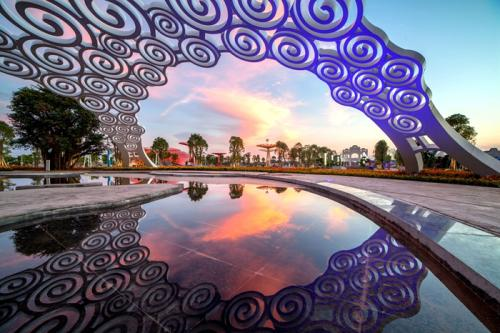
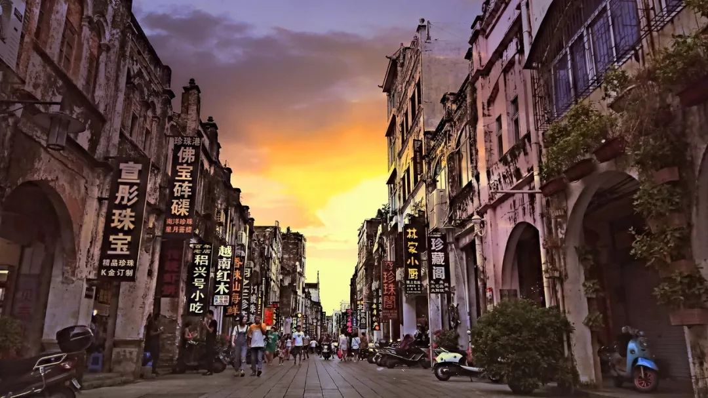

北海风景


北海|银滩
北海银滩是北海市的著名的旅游景点，位于广西北海市银海区，西起冠头岭，东至大冠沙，由西区、东区和海域沙滩区组成，东西绵延约24公里，海滩宽度在30--3000米之间，陆地面积12平方公里，总面积约38平方公里。1997年1月4日，杨尚昆在北海银滩挥毫写下“天下第一滩”。
在银滩长达七八个月的诱人泳季，在蓝天白云下沐浴着灿烂的阳光，在洁白的沙滩上游玩嬉戏，在轻柔的波浪中尽情畅游，在微腥阵阵的海风中冥想；乘海上降落伞翱翔蓝天，驾惊险刺激的摩托艇乘风破浪，还有悠闲轻松的沙滩运动，愉情悦性的鸟类表演，赏心悦目的异国风情歌舞，极目天涯，海天相连，渔帆点点。
北海|涠洲岛
涠洲岛总面积24.74平方千米 [1] ，岛的最高海拔79米。岛内景区包括鳄鱼山景区、滴水丹屏景区、石螺口景区、天主教堂景区和五彩滩景区等。
涠洲岛是火山喷发堆凝而成的岛屿，有海蚀、海积及溶岩等景观，有“蓬莱岛”之称，是中国地质年龄最年轻的火山岛，也是广西最大的海岛。
涠洲岛火山地质公园
想要去涠洲岛的话可以从北海码头搭船过去，小提醒：如果不是岛上居民或者没有认识的岛民来接待的话，是要付上岛费的哟~记得做好攻略呀！
北海|园博园
北海园博园以“花海丝路·绿映珠城”为主题，项目位于广西北海市南珠大道以东、银滩大道以北，
是2014年第四届广西园博会的举办地，是城市绿心的核心组成部分，包括一主两副三个园区，总用地面积约298公顷，属城市规划绿地。

景区的门票是60元，景区内其他项目额外收费：冰雪世界35元，冲关游戏35元。
如果不玩项目的话，去参观一些景区也是极好的，里面环境很好，有一些复古风的建筑，
晚上还有音乐喷泉观看；如果遇上了格桑花的花期，就更是完美啦！可以拍一波美美的照片~
附上美照 (￣︶￣)
北海|老街
北海老街一般指珠海路，老街形成于1927年前后，但它的起源却要追溯到19世纪初。自那时起，一批西洋建筑陆续在北海建成，经过半个多世纪的文化融合，最终形成了我们所见到的骑楼老街。这些骑楼并不是西洋建筑的简单翻版，从深层文化根源来看，它体内流动着的是中华民族灿烂文明的血液，是东西方文化碰撞的一个美丽的结晶。
无论是独自游玩的游客，还是旅游团都会来到北海老街进行游玩。 北海老街早已成为这个城市的标志，每年都吸引着大量的游客前来游玩。
虽然北海老街没有躲过被商业开发的结果，
但北海老街依然保存着属于自己的特色文化。
这这条街上，几乎每一户人家都是一个店铺，琳琅满目的小吃、甜品、特产、纪念品······
虾饼是北海很有特色的小吃，虾饼一定要趁热吃，冷了会有油腻感。北海老街的李姨虾饼还上过“舌尖上的美食”，如果来到了，就一定要买一些品尝。
拿上照片 ╮(￣▽￣)╭
北海|侨港
·侨港海滩位于侨港镇渔港，与“天下第一滩”北海银滩毗邻，是北海的又一旅游胜地。
·沙滩由石英砂堆积而成，沙质与银滩较之颜色稍暗，但不失细腻柔和。
·侨港海滩滩面延绵约500米，一般非旺季时相对银滩来说人较少较安静。
桥港镇上还有一条侨港风情街，满街都是各种各样的美食，在假期的夜晚几乎是家家店铺都爆满。
了解更多侨港美食，戳美食页面吧！(>‿◠)👉 🍛🥣🍵🍨🍜🍤🍻
北海|大墩海
大墩海，位于北海市银海区银滩西区，与冠头岭接壤， 是北海有名的渔村和游览景点。大墩海一带沙滩面积大，沙质较好，是不错的海滨浴场选择地。
早上去看日出或者下午去看日落都是个不错的选择地；在欣赏完美景后还能上冠头岭上吹吹风~（大墩海往上的山就是冠头岭）
可以绑红绳的大海龟
灯塔
日落
拍婚纱照
北海|海景
北海海景大道环绕北海半岛而修建，全程约五十公里，被誉为广西第一景观大道。北海海景广场位于北海海景大道香格里拉段东侧，于2008年10月建成并投入使用，是北海海景大道上一道亮丽的风景。
北海海景大道是一个市民及游客观光休闲的好去处。早晨，可以在这里锻炼身体、呼吸清新的海风；傍晚，可以在这里散步、观海景、看落日西沉；晚上，在这里休闲漫步、看渔火点点，打坐聊天、放松心情。
美图呈上\ (•◡•) /